It started with an undergrad paper on what search engines do to our memory. Now I ask the same question about AI.
I’m a master’s student in Graphic & Experience Design at NC State, where I also work as a teaching and research assistant. My thesis looks at how AI interaction patterns preserve or replace cognitive engagement in learners.
I studied psychology alongside design, so my work starts with how people think. My one rule for the screen: clarity first, fun right after.
Now
Writing my thesis on AI and cognitive engagement
TA for Visual Representations with Dr. Matthew Peterson
Co-presenting a conference talk on theory-based projects in undergraduate design education, October 2026
How I work
UX research, usability testing, prototyping, interaction design, information architecture and qualitative coding.
Tools
Figma, Claude, Cursor, Adobe Creative Suite and Spline.
Off the clock
Close to 50 countries so far. Painting and beadwork when the semester lets me.
UX Research · Enterprise Design · Human–AI Teaming
In this NSA-sponsored project, we partnered with the Laboratory for Analytic Sciences to reimagine tiered reporting, the process of tailoring intelligence to audiences based on their needs, expertise, and security levels. Our goal was to design an AI-augmented platform that generates versions for multiple classification tiers while keeping the analyst an active participant in the process.
How might the design of an interface automate the tiered reporting process, so that reporters can more efficiently and knowledgeably team with AI to sanitize and deliver sensitive information across classified tiers?
AI-Human Teaming
Rather than asking which analyst tasks a machine could take over, we asked what new work analysts could do with AI as a partner.
What might AI–human teaming look like in the future?
Automation concentrates value with whoever owns the machines, while augmentation creates new capabilities that can be utilized in AI-human teaming.
We framed the project around amplification rather than automation: the goal was the future workflow for analysts, not replacing them in the process.
Figure adapted from Brynjolfsson (2022), The Turing Trap.
Project Launch
We began the project by meeting with intelligence analysts, who introduced us to the sanitization and tiered reporting process.
01
Ambiguity
Knowing what can and cannot be included at each classification is an ambiguous process, one strengthened by experience.
02
Policy Checking
Checking content against numerous policies is tedious and time-consuming, which makes it a strong opportunity for AI–human teaming.
03
Varied Workflows
Analysts and organizations each structure the reporting process differently, so tools must adapt to varied workflows.
Persona
Aisha
Senior Report Releaser
Quality first. Accuracy and analytic integrity always beat speed.
8
years in intelligence
3
years as release authority
5
classification tiers per report
Where she sits: every report passes through four people before it reaches its customers
01Jordan draftsDrafter
02Marcus editsAnalytic editor
03 Our personaAisha releasesFinal check on classification, policy, and audience
04Raymond signs offSenior reporting authority
→Customers
About
Aisha is the final checkpoint before a report goes out: the “final sanity check” that it is accurate, properly classified, and meets the intelligence needs of its customers.
Responsibilities
Final release authorization: verifying classification markings, reviewing source protection measures, and tailoring distribution channels to each customer’s requirements.
Motivations
The excitement of delivering high-value intelligence that customers can act on, and the chance to teach junior reporters how to keep analytic integrity while protecting sensitive sources.
Interactive User Journey Map
From our data, I isolated six daily cognitive processes that Aisha’s work demands, and color-coded every step, touchpoint, and design opportunity in the map by the process it draws on.
Urgency Triage
Dynamically prioritizing tasks by deadline proximity, mission impact, and workflow under time pressure.
5 phases · 4 touchpoints · 2 opportunities
Analytical Validation
Verifying that analytic claims reflect the source data and that intended scope stays consistent across report tiers.
3 phases · 5 touchpoints · 2 opportunities
Strategic Judgment
High-level sensemaking under ambiguity, balancing institutional, analytic, and operational factors.
10 phases · 3 touchpoints · 3 opportunities
Exposure Compliance
Assessing classification constraints, source protection, and dissemination boundaries to prevent overexposure.
10 phases · 11 touchpoints · 5 opportunities
Institutional Authority
Holding formal decision authority in a hierarchical structure, including accountability for release.
9 phases · 8 touchpoints · 3 opportunities
Vigilance and Entry
Continuous monitoring and task switching to keep the workflow moving through interruptions.
Three early directions, each aimed at a pain point from first-round research. Pick a concept to see its sketches.
Pain pointKeeping analytical intent consistent across tiers, and not being able to see the edits that were made.
ConceptA comparison screen where AI runs a two-sided check (two tiers, two report versions, or two separate reports) and surfaces where meaning or content has shifted.
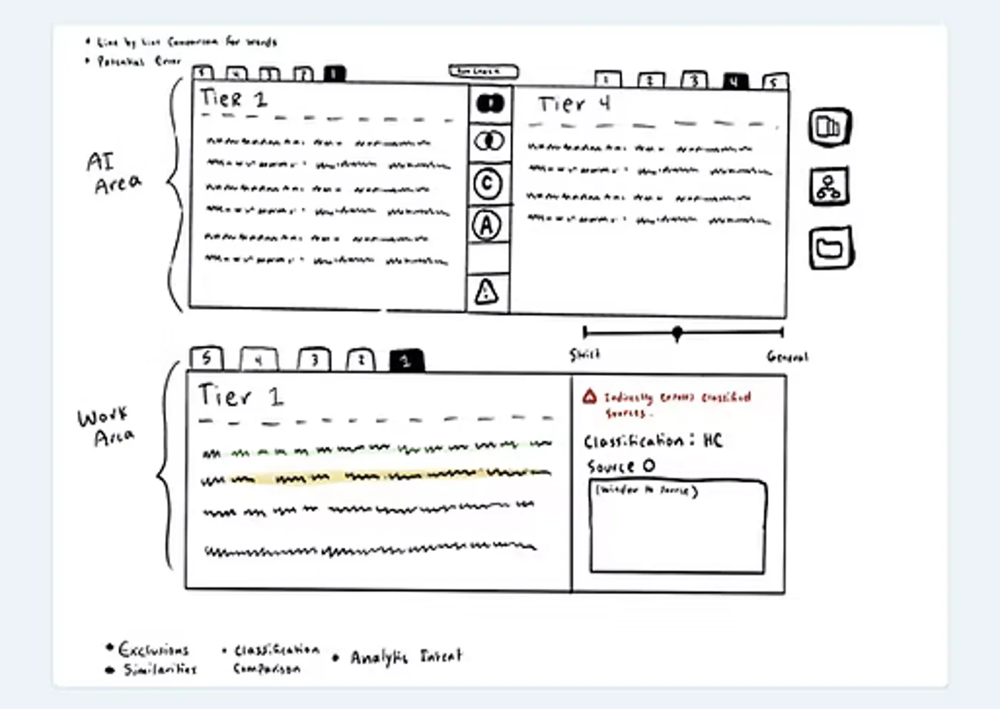
Two tiers, side by side
AI compares two tiers on top; below, a workspace gives AI suggestions based on what is being compared.
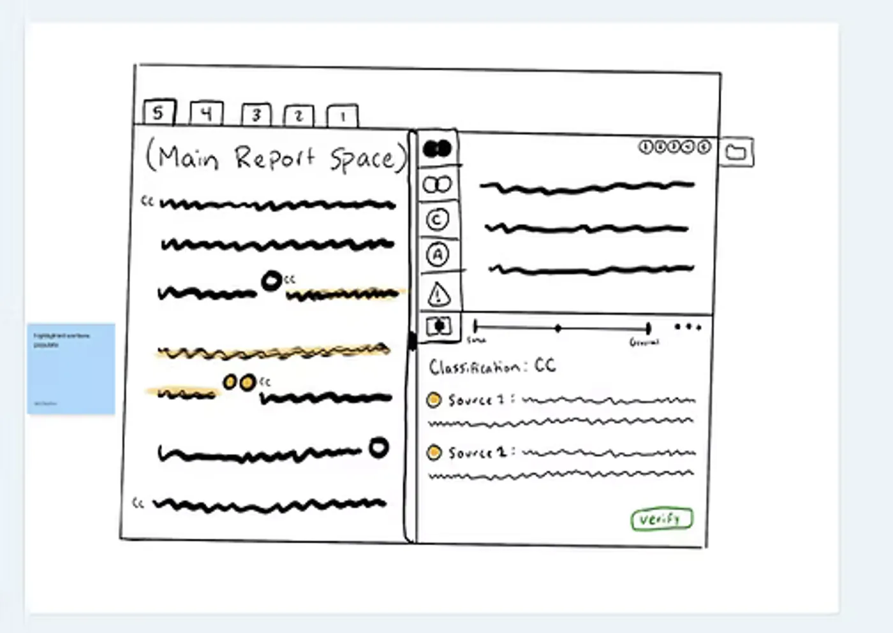
Report first, checks beside it
The main report stays on the left, with the comparison top right and AI below. AI checks analytical intent, source links, and classification, and the analyst verifies each one.
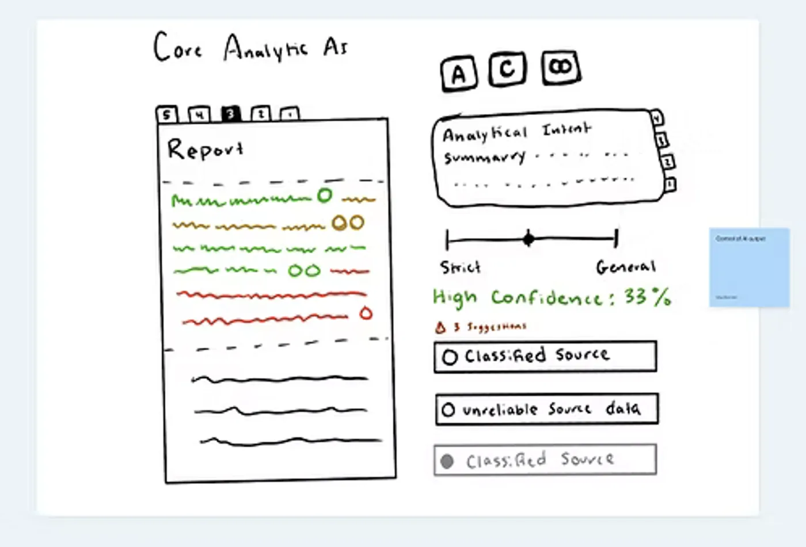
A confidence score through the report
A confidence score, based on classification and sources, runs through the report. The analyst verifies changes until it is green or they are satisfied. AI tags analytical intent per section and line so it can be compared across tiers.
Pain pointKeeping track of where each report stands, and the communication it still needs.
ConceptA node-based report web for receiving reports and following up: analysts see what comes in, rearrange it by priority, and manage the communication each report needs.
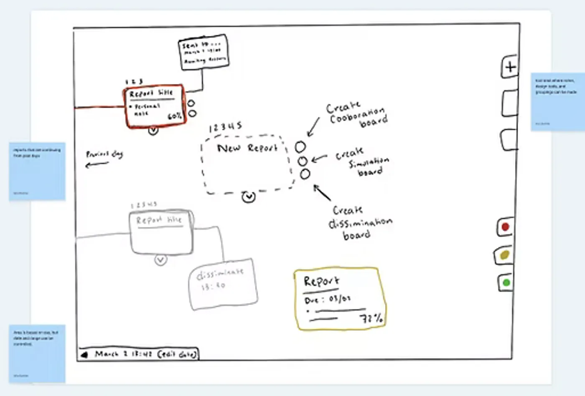
A free-form workspace
Analysts arrange reports into their own hierarchy. AI color-codes by deadline and priority (analysts can too), and populates the board as new reports arrive so the next steps can start.
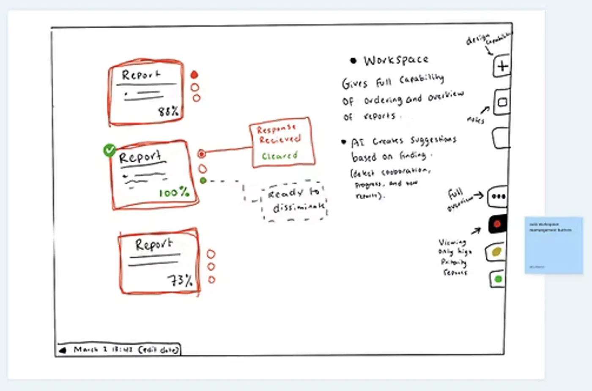
Arranged by priority
The workspace rearranges by the selected priority. AI detects how complete each report is and suggests next steps, such as a needed corroboration, an analysis suggestion, or readiness to disseminate.
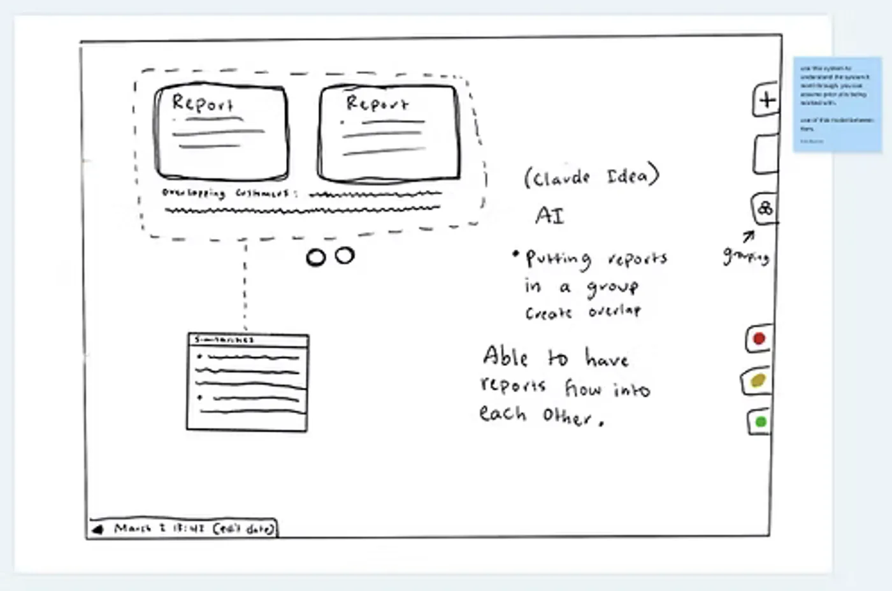
Reports that share
Grouped reports share information such as customers, sources, and similar content: a Hunch-like workspace where parameters on outflowing boxes generate new information.
Pain pointFollowing policy and analytical standards takes a high cognitive load and leans on the releaser’s experience, because policy information is not centralized.
ConceptRelated reports are grouped under one initiative, and AI connects them so relevant policy and standards appear in context.
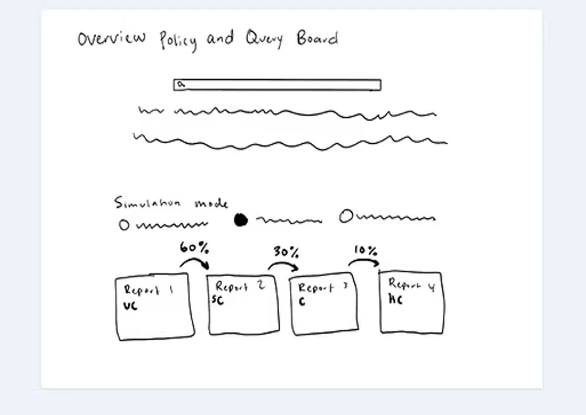
Policy query and simulation
Analysts query policy guidelines and apply them to the tiers in a simulation mode, showing how the tiers and dissemination would change.
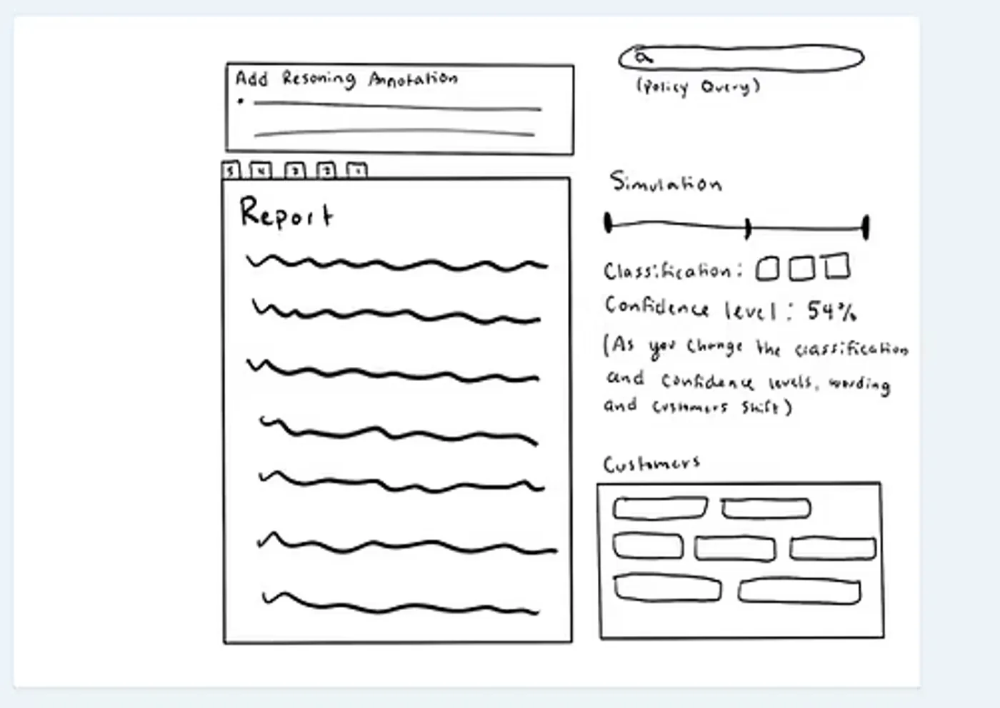
Simulation inside the report
Changing the classification generates new wording and updates the customers. Annotations can be added from the simulation, and wording adjusted.
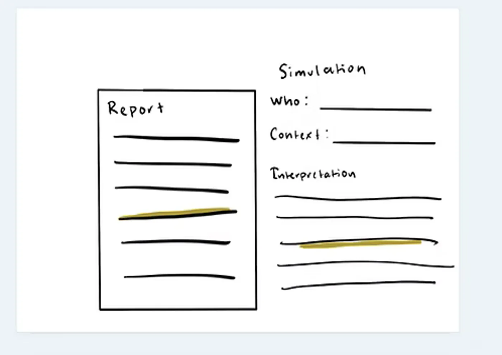
Simulated readers
The reporter enters a reader’s context and background. AI highlights passages that may be too classified for that perspective and clearance, and simulates how that person might interpret the report.
User Interviews
Report releasers are recipient focused and will always choose accuracy over efficiency.
Rounds
One
Focus
Clarify the reporter workflow and check our first concepts for alignment. Concept 01, Tier Comparison, drew strong positive feedback.
Hybrid Mapping
We mapped Aisha’s path through the new workspace as one hybrid map: the task flow she follows, the goals behind each phase, what the interface shows her, where AI steps in, and which cognitive process each step draws on.
Task flow
What Aisha does in each phase of a release. The same seven phases organize the map below.
1
Phase 1: Enter
Lands in the workspace and gets oriented
Opens the main workspace
2
Phase 2: Triage
Works out what needs her first
Chooses where to focus
Sorts by urgency or filters by signal type
Scans for priority, deadlines, returning reports, and coordination to start
3
Phase 3: Coordinate
Runs alongside triage
Sends the report for coordination
Reviews recipients and distribution
Checks coordination status
4
Phase 4: Open
Previews a report, then opens it
Hovers to preview a report
Clicks into the report
5
Phase 5: Review
Checks intent, tier consistency, and exposure
Checks claims and their support
Annotates and queries AI
Compares language across tiers
Checks classification and sources
6
Phase 6: Re-review
Picks the report back up after revisions
Receives revisions back
Opens the revised report
7
Phase 7: Release
Confirms readiness and signs off
Marks it ready to disseminate
Submits the report
After release, back to monitoring
Six cognitive processes
Every step on the map is colored by the process it draws on. Select a process to trace it through the map.
1Enter
Lands in the workspace and gets oriented
2 coded steps · all Vigilance and Entry
2Triage
Works out what needs her first
16 coded steps · mostly Urgency Triage
4Open
Previews a report, then opens it
5 coded steps · mostly Vigilance and Entry
5Review
Checks intent, tier consistency, and exposure
23 coded steps · mostly Analytical Validation
6Re-review
← Picks the report back up after revisions
5 coded steps · mostly Vigilance and Entry
7Release
← Confirms readiness, signs off, returns her to monitoring
5 coded steps · mostly Institutional Authority
3Coordinate
Runs in parallel with triage
10 coded steps · mostly Institutional Authority
Start
Main workspace
Customer requests
Keep up with deadlines
Manage coordination
Understand why it needs attention
AIDetermine next steps
Monitor the report ecosystem
AIDetect what needs attention
Decide where to act
Prioritization
Orientation & Entry
Chooses where to focus
Sorts by urgency
Filters by signal type
Report node
Reports and their progress
Urgency and deadline indicators
What is new, changed, and needed
Differences in report state, priority, and ownership
Find where attention is needed
Scans for the highest-priority report
Scans for external coordination to initiate
Scans for reports returning from revision
Scans for approaching deadlines
AIAI suggests next steps for coordination and dissemination
Coordination actions: send a task, respond to a coordination need, acknowledge a request, flag a report for follow-up, move an item to another state, or mark a dependency pending or resolved
Every change updates the status and pending items
Sends the report for coordination
Reviews distribution lists and audience relationships; adds or removes recipients
Checks external coordination status
AIAI drafts the coordination email; she reviews and sends it
AIAudience mapping: suggested recipients and missing stakeholders
Report preview: current state, deadlines, responsible actors, tier presence, coordination flags, revision status, and a short summary
Hovers to open the report further
AIIntermediate view: everything above, plus pending issues, customers, and an AI analytical summary
Clicks into the report
Report view
Top bar: report title, urgency level, report state, tiers present, dissemination stage, deadline
AIAI summary of report intent, quick indicators of detected issues, and a revision history indicator
Left side (report area): standard report tools and switching between tiers
Right side: node or cluster analysis tool
Understand the analytic intent
Check consistency across tiers
Check classification and exposure
AINode workspace shows claims, supporting sources, analytical statements, and possible logical gaps
Looks for unclear intent, weak arguments, missing support, or unjustified conclusions
AIBLUF or summary, AI-extracted key claims, the key intelligence question, and related previous reporting
Creates an annotation
Highlights passages and queries AI
Queries AI about the whole report
Annotation: problem, reasoning, and next steps
AIAI finds claim support and evidence of inconsistency
AIAI summarizes overall intent and inconsistencies
AIBecomes a marker in the report, a node in the analysis space, and a task in the workflow
Highlights passages and compares to other reports
AILanguage compared across versions, with AI-flagged differences, including potentially highly classified content
AIAI verifies classification, source protection, and policy references
Highlights sensitive wording and queries policy standards
Checks classification guidance and verifies source attachments
AIAI pulls relevant policy sections, possible classification conflicts, and flagged exposure risks
Receives revisions back
Resolved annotation count and confidence ratings
Opens the revised report
Changes are instantly visible, and annotations stay on record
Changes appear visually different
Marks it ready to disseminate
Customer review: intended audiences, distribution lists, partner agencies, tier recipients
AIFinal checklistReview confidence completeCoordination completeRecipients and distribution setTier alignment checkedCompliance checks done
Submits the report
Updated on the workflow screen
What is urgent? · What has changed?
Where is risk building?Key conclusions stay consistent · nuance isn’t lost · wording doesn’t distort meaning · sensitive information was removed correctlyClassification levels · source references · protected methods · attribution rulesOut for revision · time passesBack to monitoring
How to read the map
Phases run left to right along the top, then right to left along the bottom and back into the workspace. Each phase opens with the goals Aisha brings to it, then the steps that serve them.
Shape: what kind of step
Goal: what Aisha is trying to achieve
Page: a workspace screen she moves to
Screen: what the workspace shows her
Action: what she does
Indicator: a cue for what is new, changed, or at risk
AIWhere AI steps in; she always decides
Color: which cognitive process it draws on
01 Urgency Triage
02 Analytical Validation
03 Strategic Judgment
04 Exposure Compliance
05 Institutional Authority
06 Vigilance and Entry
Navigation or structure only
Corner dot: also draws on a second process
Lines: how steps connect
Then: the next step
Breaks down into, or shows
Handoff or return: time passes
Urgency Triage: what needs me first?
Prioritizing by deadline, mission impact, and workflow status under time pressure. It drives the Triage phase, and it is the one process on the map with no AI step.
Goals
Prioritization, and deciding where to act.
Keep up with deadlines.
Find where attention is needed: what is urgent, what has changed, where risk is building.
Aisha
Chooses where to focus, then sorts by urgency or filters by signal type.
Scans for the highest-priority report, approaching deadlines, and external coordination to initiate.
Indicators
Urgency and deadline indicators on every report node.
Analytical Validation: is the analysis sound?
Checking that claims reflect the source data and the intended scope, and that meaning holds across every tier. It dominates the Review phase.
Analytic intent
AsksIs the intent clear, the argument sound, the support there, and the conclusion justified?
DoesLooks for weak or unsupported claims; highlights passages and queries AI; queries AI about the whole report.
AIShows claims, sources, and logical gaps; extracts the BLUF, key claims, and the key intelligence question; finds claim support and summarizes overall intent.
Across tiers
AsksDo key conclusions stay consistent, is nuance kept, does wording keep its meaning, and was sensitive information removed correctly?
DoesHighlights passages and compares them to other reports.
AICompares language across versions and flags differences, including potentially highly classified content.
After revision
AsksWhat has been resolved, and how confident is the review?
SeesThe resolved annotation count and confidence ratings when revisions come back.
Strategic Judgment: what should happen next?
High-level sensemaking under ambiguity, balancing institutional, analytic, and operational considerations. It appears at five decisive moments.
Goals
Determine next steps, with AI, when coordination starts.
Understand why a report needs attention, from its intermediate view.
Aisha
Creates an annotation, framed as problem, reasoning, and next steps.
AIAI
Suggests next steps for coordination and dissemination.
Exposure Compliance: is it safe at every tier?
Classification constraints, source protection, and dissemination boundaries, so nothing reaches the wrong reader at any tier.
Aisha
Checks classification and exposure: levels, source references, protected methods, and attribution rules.
Reviews distribution lists and audience relationships, adding or removing recipients.
AIAI
Verifies classification, source protection, and policy references.
Pulls relevant policy sections, possible classification conflicts, and flagged exposure risks.
Maps the audience: suggested recipients and missing stakeholders.
Interface
A customer review before release: intended audiences, distribution lists, partner agencies, and tier recipients.
Institutional Authority: is it ready, and who signs off?
Formal decision authority and accountability for release. It leads the Coordinate phase and closes the Release phase.
Aisha
Manages coordination: sends the report for coordination and checks external coordination status.
Marks the report ready to disseminate, then submits it.
AIAI
Drafts the coordination email for her to review and send.
Compiles a final checklist: review confidence, coordination, recipients and distribution, tier alignment, and compliance.
Vigilance and Entry: where do things stand?
Continuous monitoring and task switching that keep work moving through interruptions. It bookends the flow: entry at the start, re-entry when revisions come back.
Goals
Orientation and entry, and monitoring the report ecosystem, as she enters the workspace.
Detecting what needs attention, with AI, from report progress.
Aisha
Scans for reports returning from revision, then picks them back up.
Interface
Reports and their progress, a hover preview, an intermediate view with an AI analytical summary, and a top bar on every report.
Indicators for what is new, changed, and needed, and for differences in state, priority, and ownership.
Annotations become markers, nodes, and tasks; revised changes look different and stay on record; the workflow screen updates on release.
Wireframes
Using our proposed task analysis, we broke the dashboard into three segments and took them from hand-drawn sketches to mid-fidelity screens.
Quick hand-drawn layouts for each segment.
Hand-drawn · Customer Management
Hand-drawn · Report Analysis
Hand-drawn · Annotation Feedback
The first software mockups, one set of frames per segment.
Segment 1 · 5 frames
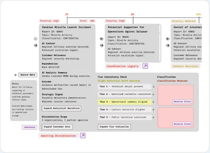
Customer Management
Segment 2 · 11 frames
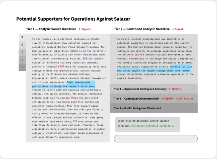
Report Analysis
Segment 3 · 3 frames
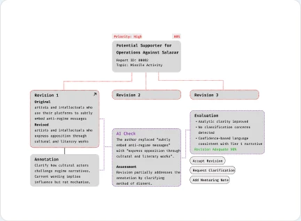
Annotation Feedback
Each team member brought their variations into mid-fidelity to share with the analysts.
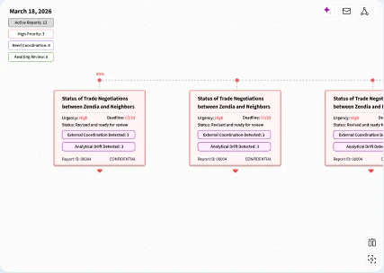
Reports on a deadline timeline
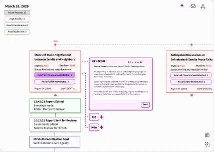
Drafting a coordination request
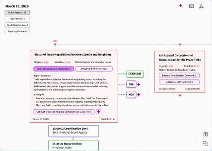
Expanded report with AI summary
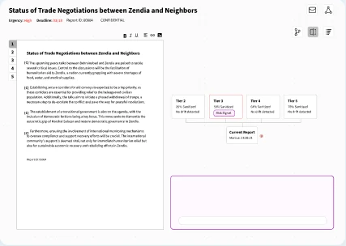
Report view with tier map
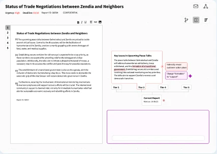
AI flags a wording change
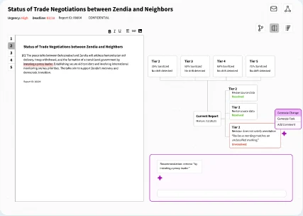
Revisions answering annotations
Iterative Usability Testing
Give reporters choices in how they navigate and review their documents, and control over complexity through progressive disclosure.
Rounds
Three
Focus
Concept validation and usability testing.
Final Deliverables
Four moments in Aisha’s day, each answering a pain point from our research.
01
A workspace built around her focus
Pain pointThere’s no individualized prioritization or personal workflow, and outside-agency coordination isn’t integrated: Aisha starts it by hand and watches for email replies.
02
Every report in context
Pain pointThere’s no way to see the changes and edits made between revisions, or how a report connects to the rest of the initiative.
03
Review with reasoning
Pain pointHolding a report to policy and analytical standards carries a high cognitive load and leans on experience, because policy information isn’t centralized.
04
Tiers side by side
Pain pointAisha continuously cross-references draft language against the raw sources to make sure the original analytical intent survives every tier.
Final Thoughts
This project was a valuable opportunity to work alongside stakeholders, centering their needs and pain points to design a solution that serves not one analyst, but many. Feedback from LAS showed that every releaser works differently, which pushed us toward a customizable workspace that adapts to each user rather than forcing a single workflow. Merlin also challenged me to imagine the future of AI–human teaming, and to consider how UX design can support human judgment rather than replace it, keeping the releaser accountable for every decision. Moving forward, I want to push my ideas even further and explore how AI can transform the reporting workflow itself, not just speed up the one that exists today.
Intelligence reporters often write one report several times, once for each audience and classification tier. This future-facing proposal imagines that work led from a single chat: the AI drafts every tier, and the reporter steers, checks and edits. We told it as three scenario clips, recorded from Figma prototypes.
Role
Research Assistant — Interaction Design & Prototyping
Team
Helen Armstrong, Matthew Peterson, Willow Ahrens
Partner
The Laboratory for Analytic Sciences
Year
2026
Tools
Figma, Claude
Hero image — Bundle Chat beside the Class Y and Class X editors
The Idea
The AI is the author and the reporter is the editor. Generation, checking, spot edits and the shared history of the report all live in one chat, so the next reporter on the bundle can see what changed and why.
One Report, Three Tiers
A bundle holds one report written for three audiences. Each tier keeps what its readers need to act and drops what they should not see.
Class ZDiplomatic officials
The fullest version, written for officials supporting peace talks, in policy language they can repeat.
Class YCIA
Generated from Class Z. Some sourcing is left out entirely and named entities are generalized.
Class XNavy
Loses all sourcing but keeps the vessel name and departure window, because the Navy needs them to act.
Design Principles
01
Show the Work
Every AI step appears in the chat as it runs and links to the paragraph it is acting on. Agent checks are named, such as @sources or @compliance.
02
Options, Not Answers
For judgment calls, the AI offers a slider with live previews in the report. The reporter picks the setting, and the AI applies it.
03
Stay in the Bundle
The AI only draws on sources attached to the bundle. Asked about anything outside them, it says so and stops.
Colour Says Who Did It
When an AI writes most of the text, the reporter needs to see at a glance which changes were theirs.
The interface uses one colour for each side of the team. Blue follows the precedent of existing human interactions. Purple marks everything the AI drafts, checks or proposes. Tier colours stay reserved for classification.
Reporter
Chat messages, selected text, Send and Accept.
SendAccept
AI
Steps, agent chips, sliders and the paragraph being written.
@sources@jargon
Three Scenario Clips
A fictional scenario follows two reporters with the same clearance across two days on one bundle.
Clip 1 · Ashley
Generate
Video — setup, generation and agent checks for Class Z
Ashley sets up the report and the AI writes Class Z paragraph by paragraph. She edits behind it as it writes, and it keeps her changes. Sliders then set how a named official is attributed and how technical the tone is.
Clip 2 · Ashley
Spot Edit
Video — inline ask, @sanitization and a cross-tier sync
With the chat minimized, Ashley edits Class Y and X in place: an inline ask, agent checks for sanitization and jargon, and an offer to carry a manual change to the matching paragraph in another tier.
Clip 3 · Jeremy
Hand Over
Video — change summary and a compliance sweep across tiers
The next morning Jeremy asks what changed and why, jumps to each edit, and runs a compliance check across all three tiers.
In progress
Attribution Is a Spectrum
How much of a named official’s role a tier needs is a judgment call, not an on/off switch.
Earlier sanitization exercises showed that named individuals need graduated handling across tiers. So the AI offers four stops and previews each one in the affected paragraphs before anything changes. The same pattern sets tone: wording runs from technical to policy, and confidence from direct to hedged.
Name + title
Title only
Role only
Omit
Slider card in the chat, with dashed previews on Class Z ¶2–3
What We Learned About Tiers
01
Supersets, Not Paraphrases
Anything in a lower tier must also exist in every tier above it. A tier is a cut of the report, not a rewrite.
02
Lowest Is Not Vaguest
The lowest tier can be the most specific about what its readers act on, even while it loses every source.
03
Some Content Must Go
Some claims have no safe lower-tier version. The right move is to leave them out, not to weaken the wording.
What’s Next
Finishing the handover clip, recording all three clips, and reviewing them with the team and our subject matter expert.
Final Thoughts
PLACEHOLDER — what designing for an AI author taught you about keeping the reporter accountable.
AI agents are changing how software gets built, but also who defines the work and how it gets specified. Through interviews with engineers, designers and enterprise leaders, we mapped how teams actually work with AI, then designed a way for teams to connect the AI conversation behind each spec to what happened in production.
Role
Co-interviewer, Research & Interaction Design
Team
Sean
Partner
IBM Studio, NC State MGXD
Year
2026
Tools
Figma, Claude
Hero image — the team-lead spec review screen
Point of View
Software engineers who write specs with AI agents need a way to connect the AI conversation behind each spec to its production outcome, because building that data allows trends and lessons to surface, leading to better-written specs in the future.
Who We Talked To
Ten semi-structured interviews across three groups, from students learning with AI to an enterprise architect governing it at scale.
4
Software Engineers
Backend, Android and frontend engineers, including former big-tech engineers now at product companies and open-source teams.
3
Professionals
A product designer, a UX research manager and an enterprise architect who walked us through AI governance across a large organization.
3
Students
Graduate students and interns, including security testing, building their habits with AI tools as they enter the field.
What We Heard
Across interviews, the work of checking AI was everywhere, and almost none of it was seen.
01
Verification Is Invisible
Engineers check AI output through self-review, peers, QA, leads, security and clients, but organizations measure AI adoption, not that checking.
02
AI Work Is Siloed
Prompts go in and code comes out, but the process behind it is never recorded, so what works for one engineer never reaches the team.
03
Usage Gets Rewarded
Teams are encouraged to use AI for its own sake. Volume becomes the metric while output quality, cost and accuracy go unmeasured.
Mapping the Ecosystem
We built stakeholder, ecosystem and journey maps from the transcripts, ranking each stakeholder only by what the data showed.
The most useful reframe centered the map on producing high-quality AI output, where efficiency, security, policy, accuracy and cost all pull on the same piece of work. An enterprise interview showed how AI governance at scale becomes a multi-stakeholder approval chain, very different from a small team's workflow.
Stakeholder map — centered on high-quality AI output
Developer approval map — six checking spokes
Current-state journey map — ticket to completion
Narrowing the Focus
Our point of view moved three times as the research and critique sharpened it.
01 · Organizations
Organizations need a way to structure AI guardrails within their teams, because clear processes for checking AI outputs build trust deliberately rather than complacently.
02 · Process
Engineers need a way to make their process with AI clear to themselves and their team, so better processes stop staying hidden.
03 · Specs
Feedback pushed us into spec-driven development, and to design one moment: receiving the outcome of a spec and acting on it for the next one.
Design Principles
01
Human-Led
People tag what they are doing and investigating, both what broke and how they teamed with AI. The AI helps, and reads activity that isn’t tagged.
02
Quality over Usage
The tool surfaces output quality, including token efficiency, never the volume of AI use.
03
Patterns, Not People
Lessons draw on what works across the team without exposing a teammate’s name or work.
The Team-Lead Flow
A monthly review where a lead sees how the team’s specs played out and turns what worked into a lesson for the next ones.
1
Monthly Spec Review
Screen — review overview
2
Find Patterns
Screen — patterns across specs
3
Draft a Lesson
Screen — lesson draft
4
Choose Who Hears It
Screen — notification settings
5
Publish
Screen — published lesson
Prototype video — the full flow
What’s Next
Usability testing a live prototype with team leads, then scaling the concept to a large enterprise team, tested against robust proxy data.
Final Thoughts
PLACEHOLDER — what this project taught you about researching a field that changes while you study it.
Durham Museum of Life & Science Butterfly Exhibition
UX Research · UI Design · Exhibition Design
This project explored how awe-driven, immersive environments can deepen learning and emotional connection in museum visitors. Through research-informed design, my team created a technology-enhanced experience for the Durham Museum of Life and Science Butterfly Conservatory that allows visitors to shape a butterfly’s life cycle. By translating conservation science into embodied interaction, the experience positions awe as a catalyst for curiosity, understanding, and environmental awareness.
Role
Designer
Team
Amaya Hush
Client
Durham Museum of Life and Science
Year
2025 (3 weeks)
Tools
Spline, After Effects, CapCut
Theoretical Foundations
This project is grounded in research identifying awe as a bridge between emotional experience and cognitive change.
Awe Encourages System Thinking
Dispositional awe may promote open-mindedness to the natural world and an increased understanding of the nature of science (Jones et al. 2022).
Awe as an Epistemic Emotion
Awe is uniquely triggered in situations where a person becomes aware of gaps in their knowledge, sparking a desire to learn (Jones et al. 2022).
Awe Facilitates Scientific Agency
Awe motivates individuals toward contemplation, encouraging them to think abstractly and engage in scientific inquiry (Jones et al. 2022).
Research by Jones et al. (2022) highlights that awe is not merely an emotional reaction to beauty or spectacle; it supports the process of learning by motivating people to seek explanations, revise their understanding, and engage more deeply with complex ideas.
Problem Statement
How might we use an immersive experience to transform visitors from passive observers into active participants, closing the gap between exposure to scientific information and meaningful understanding of ecological systems, conservation impact, and empathy for living systems?
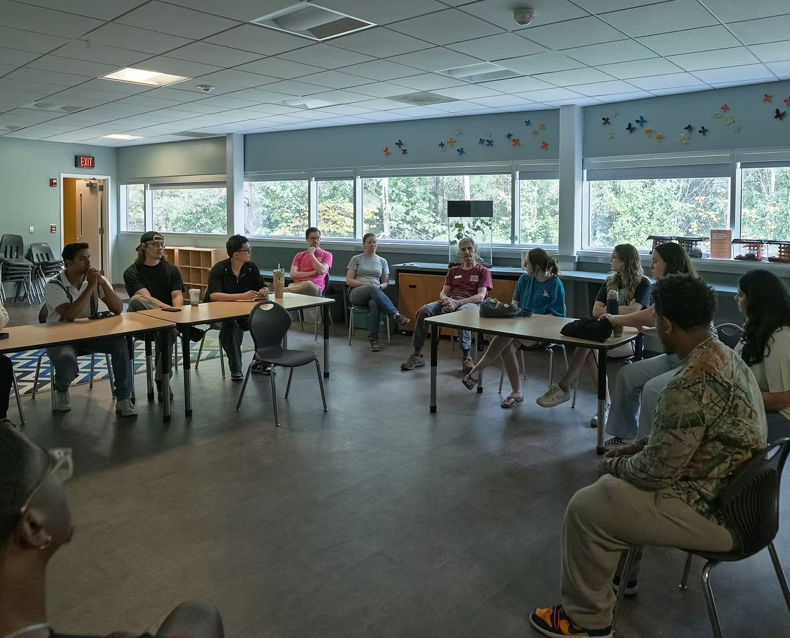
Museum Visit
Before we began designing, we met with the museum staff to gain their insights.
Key Takeaways
Technology should not bleed into the actual butterfly conservatory.
The conservatory is a deeply lived experience, but a lack of staff prevents additional knowledge from being shared.
Staff struggle to share conservation stories in a way that deeply impacts visitors.
A Butterfly Companion Experience
Step inside a living story of metamorphosis, where light, scale, and interaction bring the hidden world of butterflies to life, where visitors explore, observe, and shape their butterfly’s journey.
A Metamorphosis Journey
This experience uses immersive technology across three distinct rooms, guiding visitors through a butterfly’s journey from larva to emergence.
Through interactive storytelling, visitors learn about biology, ecosystems, and metamorphosis as they shape their own companion butterfly.
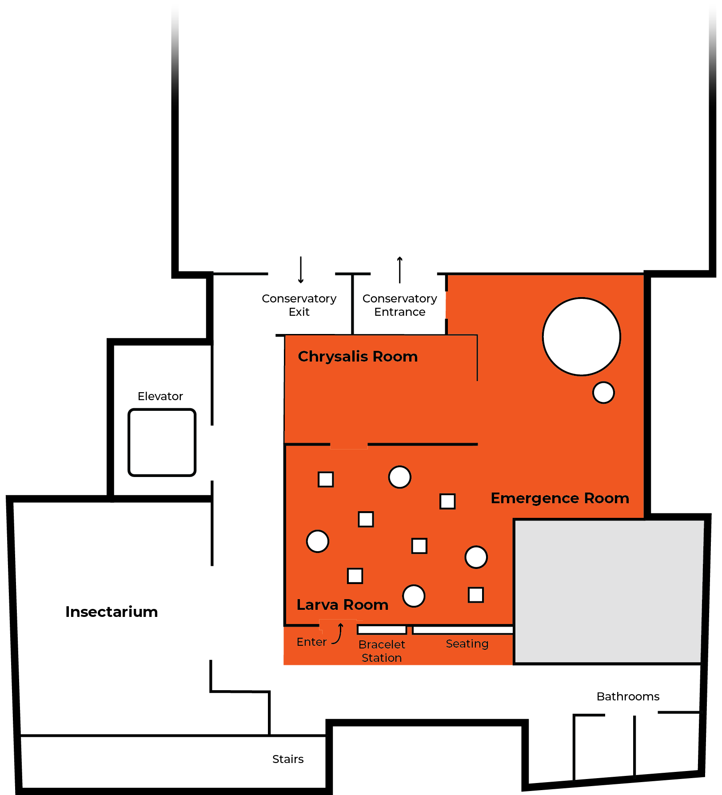
The Bracelet
Visitors begin their journey by picking up a bracelet that links them to the world of metamorphosis.
The bracelet allows visitors to interact with projections and make choices guiding their butterfly’s development.
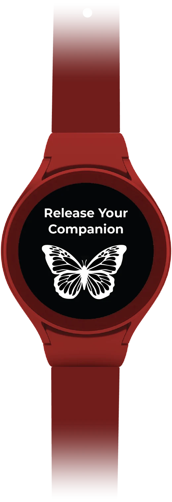
Larva Room
Purpose
To spark curiosity and discovery through open-ended exploration of early caterpillar life.
Experience
Visitors will wander through an immersive “forest” where they discover caterpillars’ behaviors, habitats, and adaptations through their own choices and movement.
Key Learning
Through hands-on interaction with plant types and microhabitats, visitors build early understanding of ecological relationships and survival.
Immersive Projections
By leveraging projection mapping technology, the visitor is transported to the immersive world of their caterpillar.
A Personalized Experience
Each visitor’s bracelet connects to the station and saves their answer choices, creating a butterfly effect.
Discovery Stations
Our exhibit explores how tiny environmental decisions shape an entire butterfly’s life. Each station represents a real scientific factor that changes how a butterfly grows, looks, and survives.
Temperature
Different climate choices influence the butterfly’s size, pigment richness, and wing symmetry.
Food
Different food selections affect the butterfly’s growth rate, development, and adult size.
Shelter
The surface a chrysalis attaches to determines its color, shape, and camouflage style.
Moisture
High moisture leads to fast growth, while low moisture slows growth and produces larger butterflies.
Photoperiod
Day length signals whether a caterpillar should transform now or wait, affecting the chrysalis duration.
Chrysalis Room
Purpose
To immerse visitors in the quiet stillness and vulnerability of the chrysalis stage.
Experience
Guests enter a dark space where glowing chrysalises pulse in slow rhythms, mirroring the internal transformation happening within.
Key Learning
This room emphasizes that metamorphosis is a delicate, slow, and unseen process, and that time, protection, and stillness are essential.
A Quiet Moment
Visitors can view their caterpillar preparing alongside glowing chrysalises that pulse in slow rhythms, mirroring the internal transformation happening within. Choices made at the stations change the flora interactions and chrysalis timing.
Emergence Room
Purpose
To evoke awe as visitors witness the dramatic emergence and the beauty of the butterfly stage.
Experience
Visitors watch their personalized butterfly emerge in vibrant detail, then bid it farewell as it lifts off to join the larger swarm.
Key Learning
Visitors explore the butterfly’s anatomy, adaptive traits, and native habitat, gaining a broader sense of biodiversity and the environmental pressures the species faces.
Meet Your Butterfly
This space projects your butterfly at a large scale, giving you a chance to observe its colors, wings, and patterns up close.
Capture the Moment
Take a photo with your butterfly to save the moment and create a memory you can carry beyond the exhibit.
Butterfly Discovery Wall Display
Want to know more? Explore your fully emerged butterfly through an informational wall display.
Learn how each station choice you made changed the appearance and attributes of your companion.
Learn about the species’ endangerment status and the current pressures impacting its environment.
Final Release
Say goodbye to your companion and enter the butterfly conservatory.
Final Thoughts
This project followed a fast-paced timeline that pushed us to move quickly into our visual exploration. The research on leveraging the epistemic emotion of awe provided strong theoretical grounding, allowing us to focus on designing awe-inspiring moments of beauty that were especially rewarding to craft visually. Moving forward, I would love to expand the experience by addressing multi-user functionality: creating interactions that feel individual without being isolating and exploring moments where companions engage with one another.